knitr::opts_chunk$set(echo = TRUE,
warning = FALSE,
message = FALSE,
fig.width = 12,
fig.height = 8)
pkgs <- c("dplyr", "readr", "magrittr", "data.table", "here", "brms", "cmdstanr", "bayestestR", "tidybayes", "ggplot2", "flextable", "officer")
for(i in pkgs){
if(!i %in% rownames(installed.packages())){
install.packages(i)
library(i, character.only = TRUE)
}
else(library(i, character.only = TRUE))
}
options("mc.cores" = parallel::detectCores(), "brms.backend" = "cmdstan")
b = 16000/parallel::detectCores()
i = 48000/parallel::detectCores()
ch = parallel::detectCores()
co = parallel::detectCores()VR - Bayesian Models - Landmark
landmark <- fread(here::here("data", "study_one", "landmark.csv"))
landmark_summary <- landmark %>% dplyr::select(ppid, trial, time,
forearmlength, target,
error, lapse_fix_target,
lapse_fix_error) %>%
dplyr::filter(!ppid %in% c("d1-004", "d1-006")) %>%
mutate(error_std = datawizard::standardize(error),
forearmlength_std = datawizard::standardize(forearmlength),
lapse_fix_error_std = datawizard::standardize(lapse_fix_error),
lapse_fix_target = factor(
lapse_fix_target,
levels = c("Forearm", "Wrist", "Elbow")),
time = factor(time,
levels = c("pre", "post"),
labels = c("Pre", "Post")),
target = factor(target,
levels = c("Forearm", "Wrist", "Elbow")))
landmark_fix <- landmark_summary %>%
dplyr::select(
ppid, trial, time,
forearmlength_std,
lapse_fix_target,
lapse_fix_error_std
) %>%
mutate(
target = lapse_fix_target,
error_std = lapse_fix_error_std,
)
landmark_summary %>%
group_by(time, target) %>%
summarise(
num_lapses = sum(lapse_fix_target != target),
num_trials = n(),
lapse_rate = num_lapses/num_trials
)# A tibble: 6 × 5
# Groups: time [2]
time target num_lapses num_trials lapse_rate
<fct> <fct> <int> <int> <dbl>
1 Pre Forearm 10 132 0.0758
2 Pre Wrist 6 132 0.0455
3 Pre Elbow 2 132 0.0152
4 Post Forearm 7 132 0.0530
5 Post Wrist 1 132 0.00758
6 Post Elbow 1 132 0.00758Models
In order to have an interaction parameter (and hypothesis test) for all three targets, brms’s nonlinear construction was used. ## Normal ### Prior
landmark_time_target_priors <- brm(
bf(error_std ~ 0 + a + b * time + d,
a ~ 0 + target,
b ~ 0 + target,
d ~ 0 + (0 + target + time + target : time | ppid),
nl = TRUE),
prior = c(prior("normal(0, 2)", nlpar = "a"),
prior("normal(.2, 2)", nlpar = "b"),
#prior("normal(0, .5)", nlpar = "c"),
prior("exponential(1)", class = "sd", nlpar = "d"),
prior("exponential(1)", class = "sigma"),
set_prior(prior = "lkj(1)", class = "cor", group = "ppid")),
data = landmark_summary,
sample_prior = "only",
seed = 1337,
silent = TRUE, refresh = 0,
save_pars = save_pars(all = TRUE),
warmup = b,
iter = i,
chains = ch,
cores = co,
control = list(adapt_delta = .975, max_treedepth = 15))Running MCMC with 16 parallel chains...
Chain 1 finished in 2.9 seconds.
Chain 11 finished in 2.7 seconds.
Chain 2 finished in 2.9 seconds.
Chain 3 finished in 2.9 seconds.
Chain 4 finished in 2.9 seconds.
Chain 5 finished in 2.9 seconds.
Chain 7 finished in 2.8 seconds.
Chain 8 finished in 2.9 seconds.
Chain 9 finished in 2.9 seconds.
Chain 10 finished in 2.9 seconds.
Chain 6 finished in 3.0 seconds.
Chain 12 finished in 2.9 seconds.
Chain 13 finished in 2.9 seconds.
Chain 14 finished in 2.9 seconds.
Chain 15 finished in 2.9 seconds.
Chain 16 finished in 2.9 seconds.
All 16 chains finished successfully.
Mean chain execution time: 2.9 seconds.
Total execution time: 3.2 seconds.summary(landmark_time_target_priors) Family: gaussian
Links: mu = identity; sigma = identity
Formula: error_std ~ 0 + a + b * time + d
a ~ 0 + target
b ~ 0 + target
d ~ 0 + (0 + target + time + target:time | ppid)
Data: landmark_summary (Number of observations: 792)
Draws: 16 chains, each with iter = 3000; warmup = 1000; thin = 1;
total post-warmup draws = 32000
Group-Level Effects:
~ppid (Number of levels: 22)
Estimate Est.Error l-95% CI
sd(d_targetForearm) 1.00 1.00 0.03
sd(d_targetWrist) 1.00 1.00 0.03
sd(d_targetElbow) 1.00 1.00 0.03
sd(d_timePost) 1.00 1.00 0.03
sd(d_targetWrist:timePost) 1.00 0.99 0.03
sd(d_targetElbow:timePost) 1.00 0.99 0.03
cor(d_targetForearm,d_targetWrist) -0.00 0.38 -0.70
cor(d_targetForearm,d_targetElbow) -0.00 0.38 -0.70
cor(d_targetWrist,d_targetElbow) 0.00 0.38 -0.71
cor(d_targetForearm,d_timePost) 0.00 0.38 -0.71
cor(d_targetWrist,d_timePost) -0.00 0.38 -0.70
cor(d_targetElbow,d_timePost) -0.00 0.38 -0.71
cor(d_targetForearm,d_targetWrist:timePost) 0.00 0.37 -0.70
cor(d_targetWrist,d_targetWrist:timePost) -0.00 0.38 -0.71
cor(d_targetElbow,d_targetWrist:timePost) 0.00 0.38 -0.71
cor(d_timePost,d_targetWrist:timePost) -0.00 0.38 -0.70
cor(d_targetForearm,d_targetElbow:timePost) 0.00 0.38 -0.70
cor(d_targetWrist,d_targetElbow:timePost) 0.00 0.38 -0.71
cor(d_targetElbow,d_targetElbow:timePost) -0.00 0.38 -0.71
cor(d_timePost,d_targetElbow:timePost) 0.00 0.38 -0.70
cor(d_targetWrist:timePost,d_targetElbow:timePost) 0.00 0.38 -0.71
u-95% CI Rhat Bulk_ESS
sd(d_targetForearm) 3.72 1.00 40949
sd(d_targetWrist) 3.72 1.00 41372
sd(d_targetElbow) 3.71 1.00 41038
sd(d_timePost) 3.69 1.00 40480
sd(d_targetWrist:timePost) 3.65 1.00 41655
sd(d_targetElbow:timePost) 3.65 1.00 39519
cor(d_targetForearm,d_targetWrist) 0.70 1.00 78161
cor(d_targetForearm,d_targetElbow) 0.71 1.00 75245
cor(d_targetWrist,d_targetElbow) 0.71 1.00 43238
cor(d_targetForearm,d_timePost) 0.71 1.00 72022
cor(d_targetWrist,d_timePost) 0.70 1.00 42481
cor(d_targetElbow,d_timePost) 0.70 1.00 30574
cor(d_targetForearm,d_targetWrist:timePost) 0.70 1.00 72744
cor(d_targetWrist,d_targetWrist:timePost) 0.70 1.00 42689
cor(d_targetElbow,d_targetWrist:timePost) 0.70 1.00 30429
cor(d_timePost,d_targetWrist:timePost) 0.71 1.00 22146
cor(d_targetForearm,d_targetElbow:timePost) 0.71 1.00 78830
cor(d_targetWrist,d_targetElbow:timePost) 0.71 1.00 43136
cor(d_targetElbow,d_targetElbow:timePost) 0.71 1.00 32989
cor(d_timePost,d_targetElbow:timePost) 0.70 1.00 21354
cor(d_targetWrist:timePost,d_targetElbow:timePost) 0.70 1.00 17879
Tail_ESS
sd(d_targetForearm) 17573
sd(d_targetWrist) 17935
sd(d_targetElbow) 18447
sd(d_timePost) 17762
sd(d_targetWrist:timePost) 17780
sd(d_targetElbow:timePost) 18423
cor(d_targetForearm,d_targetWrist) 21763
cor(d_targetForearm,d_targetElbow) 20904
cor(d_targetWrist,d_targetElbow) 21445
cor(d_targetForearm,d_timePost) 21187
cor(d_targetWrist,d_timePost) 22565
cor(d_targetElbow,d_timePost) 21015
cor(d_targetForearm,d_targetWrist:timePost) 22191
cor(d_targetWrist,d_targetWrist:timePost) 22038
cor(d_targetElbow,d_targetWrist:timePost) 22161
cor(d_timePost,d_targetWrist:timePost) 23728
cor(d_targetForearm,d_targetElbow:timePost) 21789
cor(d_targetWrist,d_targetElbow:timePost) 21999
cor(d_targetElbow,d_targetElbow:timePost) 22843
cor(d_timePost,d_targetElbow:timePost) 23502
cor(d_targetWrist:timePost,d_targetElbow:timePost) 23560
Population-Level Effects:
Estimate Est.Error l-95% CI u-95% CI Rhat Bulk_ESS Tail_ESS
a_targetForearm 0.01 1.99 -3.86 3.87 1.00 77599 22084
a_targetWrist -0.00 2.00 -3.90 3.90 1.00 81280 23001
a_targetElbow 0.01 2.01 -3.93 3.95 1.00 76380 22988
b_targetForearm 0.21 1.99 -3.74 4.11 1.00 76807 20779
b_targetWrist 0.21 2.02 -3.78 4.18 1.00 78995 22650
b_targetElbow 0.20 1.99 -3.71 4.11 1.00 74477 22401
Family Specific Parameters:
Estimate Est.Error l-95% CI u-95% CI Rhat Bulk_ESS Tail_ESS
sigma 0.99 0.99 0.03 3.66 1.00 41390 17185
Draws were sampled using sample(hmc). For each parameter, Bulk_ESS
and Tail_ESS are effective sample size measures, and Rhat is the potential
scale reduction factor on split chains (at convergence, Rhat = 1).plot(landmark_time_target_priors)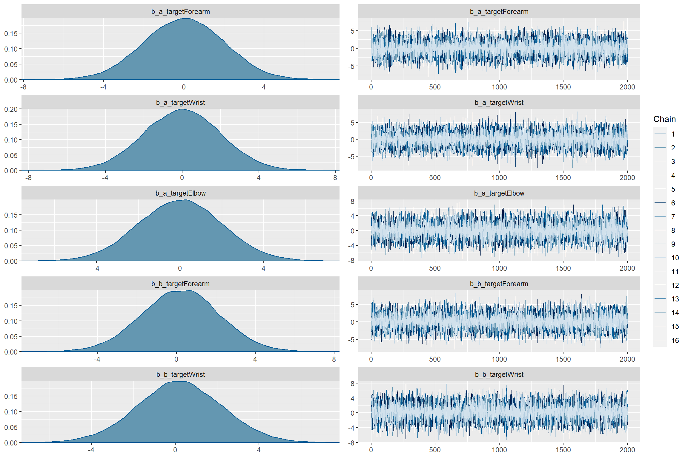
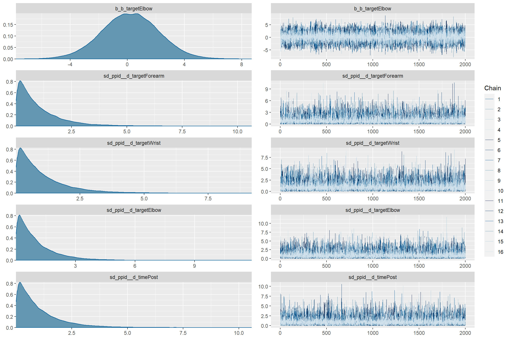
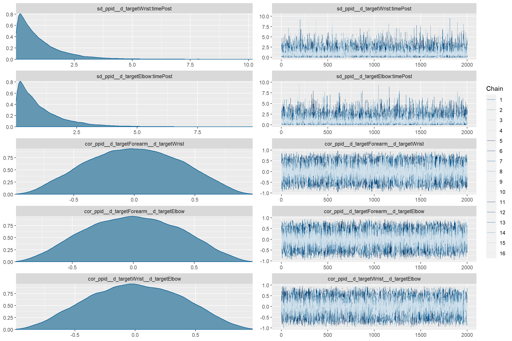
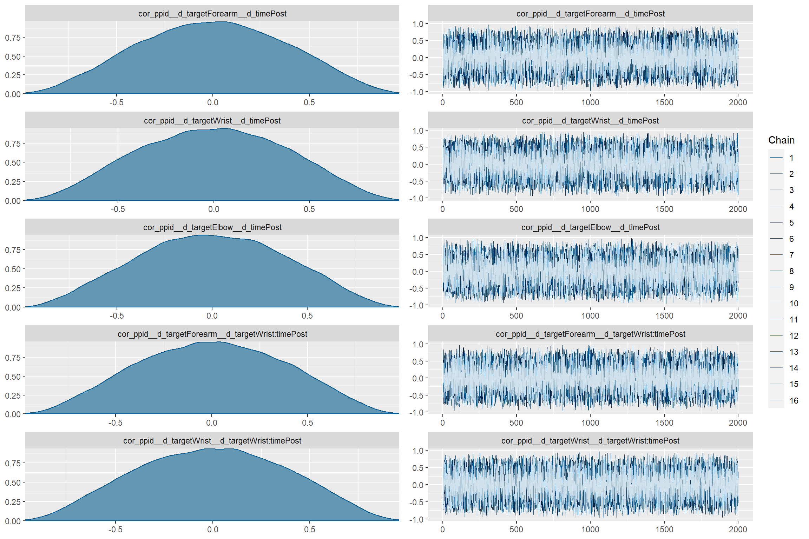
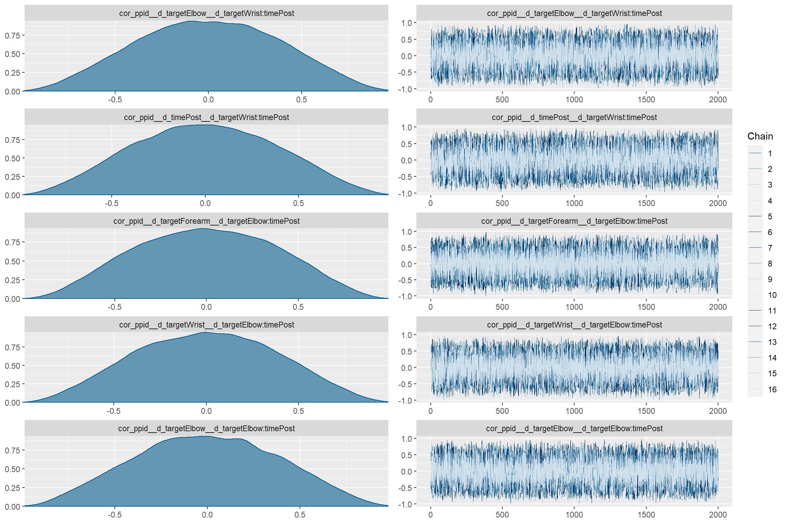
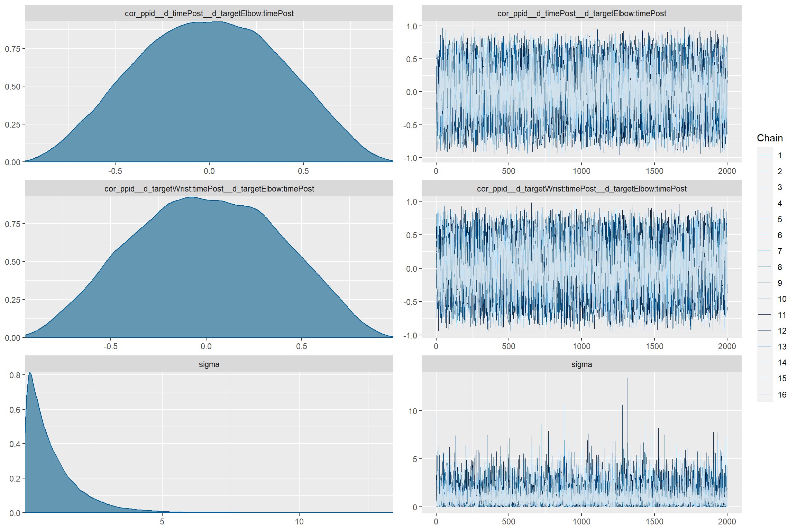
Posterior
landmark_time_target <- update(
landmark_time_target_priors,
sample_prior = "no",
refresh = 0,
seed = 1337,
file = here::here("scripts", "for_osf", "tooluse_in_VR", "models", "landmark_error_time_target.rds"),
file_refit = "on_change",
silent = TRUE
)Running MCMC with 16 parallel chains...
Chain 12 finished in 43.7 seconds.
Chain 5 finished in 45.5 seconds.
Chain 10 finished in 45.5 seconds.
Chain 8 finished in 45.8 seconds.
Chain 6 finished in 46.1 seconds.
Chain 15 finished in 47.4 seconds.
Chain 7 finished in 48.1 seconds.
Chain 11 finished in 48.3 seconds.
Chain 9 finished in 48.3 seconds.
Chain 13 finished in 48.7 seconds.
Chain 16 finished in 48.6 seconds.
Chain 4 finished in 55.0 seconds.
Chain 3 finished in 55.3 seconds.
Chain 14 finished in 58.1 seconds.
Chain 2 finished in 62.0 seconds.
Chain 1 finished in 62.6 seconds.
All 16 chains finished successfully.
Mean chain execution time: 50.6 seconds.
Total execution time: 62.7 seconds.summary(landmark_time_target) Family: gaussian
Links: mu = identity; sigma = identity
Formula: error_std ~ 0 + a + b * time + d
a ~ 0 + target
b ~ 0 + target
d ~ 0 + (0 + target + time + target:time | ppid)
Data: landmark_summary (Number of observations: 792)
Draws: 16 chains, each with iter = 3000; warmup = 1000; thin = 1;
total post-warmup draws = 32000
Group-Level Effects:
~ppid (Number of levels: 22)
Estimate Est.Error l-95% CI
sd(d_targetForearm) 0.66 0.10 0.49
sd(d_targetWrist) 0.85 0.14 0.62
sd(d_targetElbow) 0.56 0.11 0.38
sd(d_timePost) 0.43 0.10 0.25
sd(d_targetWrist:timePost) 0.23 0.15 0.01
sd(d_targetElbow:timePost) 0.31 0.15 0.03
cor(d_targetForearm,d_targetWrist) 0.68 0.12 0.39
cor(d_targetForearm,d_targetElbow) 0.66 0.14 0.33
cor(d_targetWrist,d_targetElbow) 0.25 0.20 -0.16
cor(d_targetForearm,d_timePost) -0.36 0.20 -0.70
cor(d_targetWrist,d_timePost) -0.06 0.22 -0.47
cor(d_targetElbow,d_timePost) -0.35 0.22 -0.73
cor(d_targetForearm,d_targetWrist:timePost) -0.01 0.32 -0.64
cor(d_targetWrist,d_targetWrist:timePost) -0.12 0.33 -0.70
cor(d_targetElbow,d_targetWrist:timePost) -0.16 0.33 -0.74
cor(d_timePost,d_targetWrist:timePost) -0.03 0.34 -0.65
cor(d_targetForearm,d_targetElbow:timePost) 0.40 0.27 -0.24
cor(d_targetWrist,d_targetElbow:timePost) 0.17 0.29 -0.43
cor(d_targetElbow,d_targetElbow:timePost) 0.32 0.30 -0.32
cor(d_timePost,d_targetElbow:timePost) -0.32 0.31 -0.81
cor(d_targetWrist:timePost,d_targetElbow:timePost) -0.12 0.36 -0.75
u-95% CI Rhat Bulk_ESS
sd(d_targetForearm) 0.89 1.00 10553
sd(d_targetWrist) 1.16 1.00 11258
sd(d_targetElbow) 0.80 1.00 14785
sd(d_timePost) 0.65 1.00 13620
sd(d_targetWrist:timePost) 0.58 1.00 7291
sd(d_targetElbow:timePost) 0.63 1.00 7856
cor(d_targetForearm,d_targetWrist) 0.87 1.00 11208
cor(d_targetForearm,d_targetElbow) 0.88 1.00 15082
cor(d_targetWrist,d_targetElbow) 0.61 1.00 16904
cor(d_targetForearm,d_timePost) 0.06 1.00 16527
cor(d_targetWrist,d_timePost) 0.37 1.00 19858
cor(d_targetElbow,d_timePost) 0.11 1.00 14935
cor(d_targetForearm,d_targetWrist:timePost) 0.61 1.00 31279
cor(d_targetWrist,d_targetWrist:timePost) 0.55 1.00 32333
cor(d_targetElbow,d_targetWrist:timePost) 0.53 1.00 23759
cor(d_timePost,d_targetWrist:timePost) 0.65 1.00 26161
cor(d_targetForearm,d_targetElbow:timePost) 0.82 1.00 23143
cor(d_targetWrist,d_targetElbow:timePost) 0.70 1.00 32583
cor(d_targetElbow,d_targetElbow:timePost) 0.82 1.00 24424
cor(d_timePost,d_targetElbow:timePost) 0.38 1.00 18047
cor(d_targetWrist:timePost,d_targetElbow:timePost) 0.59 1.00 15817
Tail_ESS
sd(d_targetForearm) 16696
sd(d_targetWrist) 17197
sd(d_targetElbow) 19292
sd(d_timePost) 19599
sd(d_targetWrist:timePost) 13425
sd(d_targetElbow:timePost) 8590
cor(d_targetForearm,d_targetWrist) 17453
cor(d_targetForearm,d_targetElbow) 20143
cor(d_targetWrist,d_targetElbow) 22983
cor(d_targetForearm,d_timePost) 21691
cor(d_targetWrist,d_timePost) 23509
cor(d_targetElbow,d_timePost) 21976
cor(d_targetForearm,d_targetWrist:timePost) 23569
cor(d_targetWrist,d_targetWrist:timePost) 23831
cor(d_targetElbow,d_targetWrist:timePost) 21770
cor(d_timePost,d_targetWrist:timePost) 24789
cor(d_targetForearm,d_targetElbow:timePost) 18313
cor(d_targetWrist,d_targetElbow:timePost) 24689
cor(d_targetElbow,d_targetElbow:timePost) 21582
cor(d_timePost,d_targetElbow:timePost) 20025
cor(d_targetWrist:timePost,d_targetElbow:timePost) 20619
Population-Level Effects:
Estimate Est.Error l-95% CI u-95% CI Rhat Bulk_ESS Tail_ESS
a_targetForearm 0.15 0.15 -0.15 0.45 1.00 5787 10261
a_targetWrist 0.22 0.19 -0.15 0.60 1.00 7183 13156
a_targetElbow -0.38 0.13 -0.65 -0.12 1.00 9066 15491
b_targetForearm -0.25 0.12 -0.50 -0.01 1.00 13404 18087
b_targetWrist 0.20 0.14 -0.07 0.46 1.00 13944 19769
b_targetElbow 0.08 0.13 -0.17 0.33 1.00 17577 20782
Family Specific Parameters:
Estimate Est.Error l-95% CI u-95% CI Rhat Bulk_ESS Tail_ESS
sigma 0.67 0.02 0.63 0.71 1.00 32612 23670
Draws were sampled using sample(hmc). For each parameter, Bulk_ESS
and Tail_ESS are effective sample size measures, and Rhat is the potential
scale reduction factor on split chains (at convergence, Rhat = 1).#plot(landmark_time_target)
pp_check(
landmark_time_target,
type = "dens_overlay_grouped",
ndraws = 50,
group = "target") +
theme_tidybayes() +
theme(
axis.text.y = element_blank()
) +
labs(
title = "Landmark Task Errors",
subtitle = "Posterior Draws vs. Empirical Distribution",
x = "Error (standardized)"
)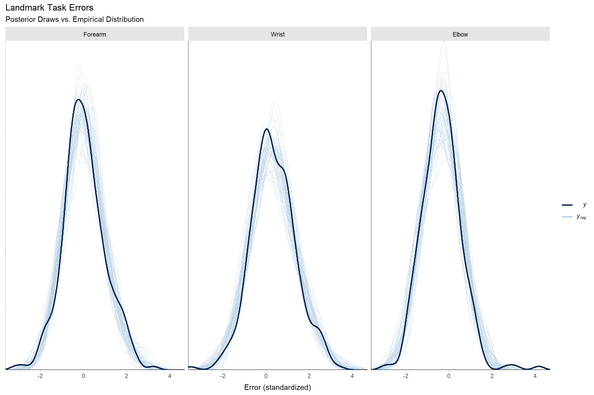
landmark_describe <- bayestestR::describe_posterior(
landmark_time_target,
centrality = "map",
ci_method="hdi"
) %>% as.data.table()
landmark_describe Parameter MAP CI CI_low CI_high pd ROPE_CI
1: b_a_targetForearm 0.15144495 0.95 -0.1509170 0.45010800 0.8345312 0.95
2: b_a_targetWrist 0.24913059 0.95 -0.1476310 0.60011000 0.8793437 0.95
3: b_a_targetElbow -0.37855006 0.95 -0.6436930 -0.11402000 0.9962813 0.95
4: b_b_targetForearm -0.26108387 0.95 -0.4952640 -0.00890153 0.9782500 0.95
5: b_b_targetWrist 0.20803180 0.95 -0.0682525 0.46491600 0.9303438 0.95
6: b_b_targetElbow 0.09065071 0.95 -0.1703890 0.32580900 0.7436250 0.95
ROPE_low ROPE_high ROPE_Percentage Rhat ESS
1: -0.1 0.1 0.34509868 1.001740 5729.150
2: -0.1 0.1 0.22084800 1.001371 7074.626
3: -0.1 0.1 0.00000000 1.000613 9003.578
4: -0.1 0.1 0.09098684 1.001269 13250.168
5: -0.1 0.1 0.21868421 1.000951 13780.017
6: -0.1 0.1 0.50898026 1.000846 17407.135landmark_bfs <- landmark_time_target %>%
bayesfactor_pointnull(
direction = ">",
prior = landmark_time_target_priors
) %>%
as.data.table()
(landmark_error_table <- merge(
landmark_bfs[Parameter %in% c(
"b_b_targetElbow",
"b_b_targetWrist",
"b_b_targetForearm"),
.(Parameter = fcase(
Parameter == "b_b_targetElbow", "Elbow",
Parameter == "b_b_targetWrist", "Wrist",
Parameter == "b_b_targetForearm", "Forearm"),
BF = exp(log_BF))],
landmark_describe[
Parameter %in% c(
"b_b_targetElbow",
"b_b_targetWrist",
"b_b_targetForearm"
)][,
Parameter := fcase(
Parameter == "b_b_targetElbow", "Elbow",
Parameter == "b_b_targetWrist", "Wrist",
Parameter == "b_b_targetForearm", "Forearm"
)
],
by = "Parameter"
)
) Parameter BF MAP CI CI_low CI_high pd
1: Elbow 0.10481707 0.09065071 0.95 -0.1703890 0.32580900 0.7436250
2: Forearm 0.01986817 -0.26108387 0.95 -0.4952640 -0.00890153 0.9782500
3: Wrist 0.35327182 0.20803180 0.95 -0.0682525 0.46491600 0.9303438
ROPE_CI ROPE_low ROPE_high ROPE_Percentage Rhat ESS
1: 0.95 -0.1 0.1 0.50898026 1.000846 17407.13
2: 0.95 -0.1 0.1 0.09098684 1.001269 13250.17
3: 0.95 -0.1 0.1 0.21868421 1.000951 13780.02write_csv(landmark_error_table, file = here::here("scripts", "for_osf", "tooluse_in_VR", "tables", "landmark_table.csv"))Lapse Fix
Prior
landmark_lapsefix_error_time_target_priors <- brm(
bf(error_std ~ 0 + a + b * time + d,
a ~ 0 + target,
b ~ 0 + target,
d ~ 0 + (0 + target + time + target : time | ppid),
nl = TRUE),
prior = c(prior("normal(0, 2)", nlpar = "a"),
prior("normal(0, 2)", nlpar = "b"),
prior("exponential(1)", class = "sd", nlpar = "d"),
prior("exponential(1)", class = "sigma")),
data = landmark_fix,
sample_prior = "only",
seed = 1337,
silent = TRUE, refresh = 0,
save_pars = save_pars(all = TRUE),
warmup = b,
iter = i,
chains = ch,
cores = co,
control = list(adapt_delta = .975, max_treedepth = 15))Running MCMC with 16 parallel chains...
Chain 1 finished in 3.0 seconds.
Chain 2 finished in 3.0 seconds.
Chain 3 finished in 3.0 seconds.
Chain 8 finished in 3.0 seconds.
Chain 4 finished in 3.1 seconds.
Chain 5 finished in 3.1 seconds.
Chain 6 finished in 3.1 seconds.
Chain 7 finished in 3.0 seconds.
Chain 9 finished in 3.0 seconds.
Chain 10 finished in 3.0 seconds.
Chain 11 finished in 3.0 seconds.
Chain 12 finished in 3.0 seconds.
Chain 13 finished in 2.9 seconds.
Chain 14 finished in 3.0 seconds.
Chain 15 finished in 3.1 seconds.
Chain 16 finished in 3.0 seconds.
All 16 chains finished successfully.
Mean chain execution time: 3.0 seconds.
Total execution time: 3.3 seconds.summary(landmark_lapsefix_error_time_target_priors) Family: gaussian
Links: mu = identity; sigma = identity
Formula: error_std ~ 0 + a + b * time + d
a ~ 0 + target
b ~ 0 + target
d ~ 0 + (0 + target + time + target:time | ppid)
Data: landmark_fix (Number of observations: 792)
Draws: 16 chains, each with iter = 3000; warmup = 1000; thin = 1;
total post-warmup draws = 32000
Group-Level Effects:
~ppid (Number of levels: 22)
Estimate Est.Error l-95% CI
sd(d_targetForearm) 1.00 1.00 0.02
sd(d_targetWrist) 0.99 0.99 0.03
sd(d_targetElbow) 1.00 0.99 0.03
sd(d_timePost) 1.00 1.00 0.02
sd(d_targetWrist:timePost) 1.00 0.99 0.02
sd(d_targetElbow:timePost) 1.00 1.00 0.03
cor(d_targetForearm,d_targetWrist) 0.00 0.38 -0.71
cor(d_targetForearm,d_targetElbow) 0.00 0.38 -0.70
cor(d_targetWrist,d_targetElbow) 0.00 0.38 -0.70
cor(d_targetForearm,d_timePost) -0.00 0.38 -0.71
cor(d_targetWrist,d_timePost) -0.00 0.38 -0.71
cor(d_targetElbow,d_timePost) -0.00 0.38 -0.71
cor(d_targetForearm,d_targetWrist:timePost) 0.00 0.38 -0.70
cor(d_targetWrist,d_targetWrist:timePost) -0.00 0.38 -0.71
cor(d_targetElbow,d_targetWrist:timePost) 0.00 0.38 -0.70
cor(d_timePost,d_targetWrist:timePost) 0.00 0.38 -0.71
cor(d_targetForearm,d_targetElbow:timePost) 0.00 0.38 -0.70
cor(d_targetWrist,d_targetElbow:timePost) 0.00 0.38 -0.70
cor(d_targetElbow,d_targetElbow:timePost) -0.00 0.38 -0.71
cor(d_timePost,d_targetElbow:timePost) -0.00 0.38 -0.71
cor(d_targetWrist:timePost,d_targetElbow:timePost) 0.01 0.38 -0.70
u-95% CI Rhat Bulk_ESS
sd(d_targetForearm) 3.72 1.00 42850
sd(d_targetWrist) 3.65 1.00 42385
sd(d_targetElbow) 3.68 1.00 42928
sd(d_timePost) 3.71 1.00 45070
sd(d_targetWrist:timePost) 3.69 1.00 44469
sd(d_targetElbow:timePost) 3.69 1.00 44055
cor(d_targetForearm,d_targetWrist) 0.71 1.00 84389
cor(d_targetForearm,d_targetElbow) 0.71 1.00 75180
cor(d_targetWrist,d_targetElbow) 0.70 1.00 42990
cor(d_targetForearm,d_timePost) 0.70 1.00 79775
cor(d_targetWrist,d_timePost) 0.71 1.00 44114
cor(d_targetElbow,d_timePost) 0.71 1.00 30245
cor(d_targetForearm,d_targetWrist:timePost) 0.70 1.00 79022
cor(d_targetWrist,d_targetWrist:timePost) 0.70 1.00 40735
cor(d_targetElbow,d_targetWrist:timePost) 0.71 1.00 29101
cor(d_timePost,d_targetWrist:timePost) 0.71 1.00 21670
cor(d_targetForearm,d_targetElbow:timePost) 0.71 1.00 80880
cor(d_targetWrist,d_targetElbow:timePost) 0.71 1.00 41577
cor(d_targetElbow,d_targetElbow:timePost) 0.71 1.00 32614
cor(d_timePost,d_targetElbow:timePost) 0.70 1.00 20967
cor(d_targetWrist:timePost,d_targetElbow:timePost) 0.70 1.00 18043
Tail_ESS
sd(d_targetForearm) 18310
sd(d_targetWrist) 19122
sd(d_targetElbow) 18442
sd(d_timePost) 18468
sd(d_targetWrist:timePost) 18535
sd(d_targetElbow:timePost) 18431
cor(d_targetForearm,d_targetWrist) 21209
cor(d_targetForearm,d_targetElbow) 20436
cor(d_targetWrist,d_targetElbow) 21944
cor(d_targetForearm,d_timePost) 21084
cor(d_targetWrist,d_timePost) 22107
cor(d_targetElbow,d_timePost) 20757
cor(d_targetForearm,d_targetWrist:timePost) 22045
cor(d_targetWrist,d_targetWrist:timePost) 21033
cor(d_targetElbow,d_targetWrist:timePost) 22413
cor(d_timePost,d_targetWrist:timePost) 23154
cor(d_targetForearm,d_targetElbow:timePost) 20949
cor(d_targetWrist,d_targetElbow:timePost) 21611
cor(d_targetElbow,d_targetElbow:timePost) 23680
cor(d_timePost,d_targetElbow:timePost) 24303
cor(d_targetWrist:timePost,d_targetElbow:timePost) 23909
Population-Level Effects:
Estimate Est.Error l-95% CI u-95% CI Rhat Bulk_ESS Tail_ESS
a_targetForearm 0.00 1.97 -3.85 3.85 1.00 81359 22969
a_targetWrist -0.01 1.98 -3.86 3.82 1.00 80937 22057
a_targetElbow 0.01 1.98 -3.89 3.92 1.00 82942 22497
b_targetForearm 0.01 1.99 -3.91 3.92 1.00 86002 21643
b_targetWrist 0.00 2.01 -3.94 3.96 1.00 85534 22352
b_targetElbow 0.01 2.00 -3.90 3.95 1.00 77215 23368
Family Specific Parameters:
Estimate Est.Error l-95% CI u-95% CI Rhat Bulk_ESS Tail_ESS
sigma 1.00 0.99 0.03 3.63 1.00 44380 17956
Draws were sampled using sample(hmc). For each parameter, Bulk_ESS
and Tail_ESS are effective sample size measures, and Rhat is the potential
scale reduction factor on split chains (at convergence, Rhat = 1).plot(landmark_lapsefix_error_time_target_priors)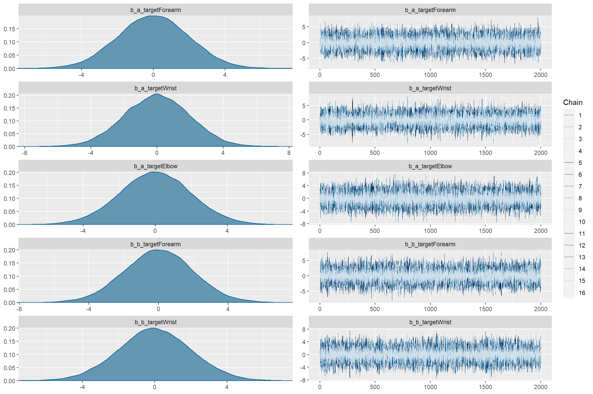
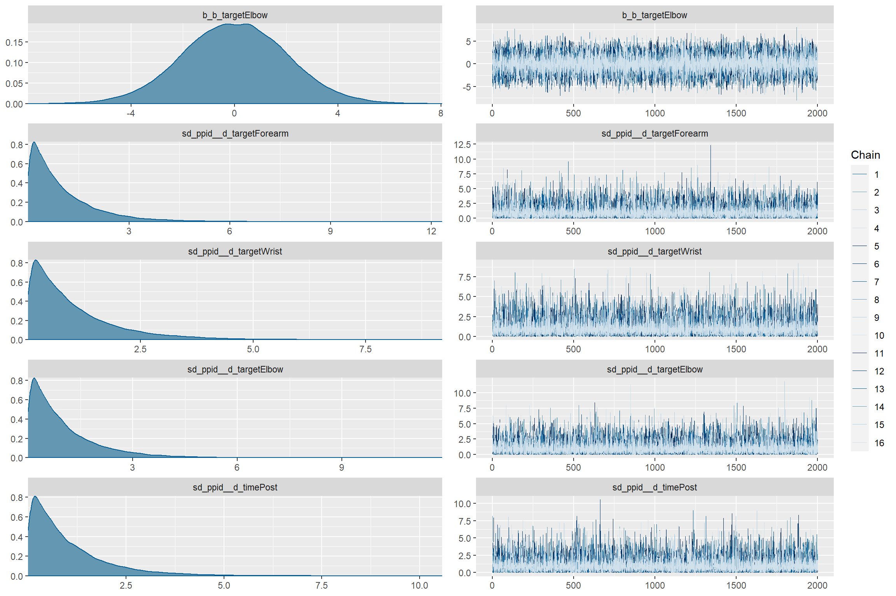
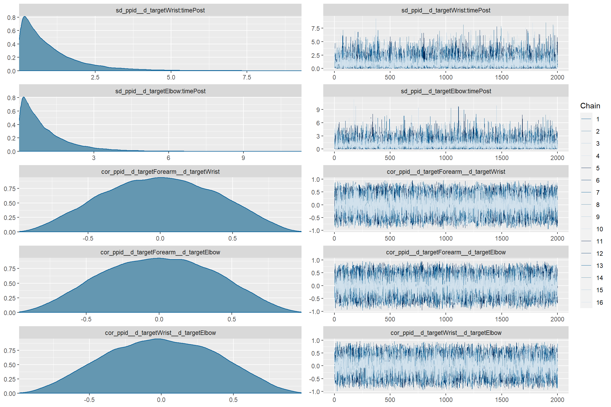
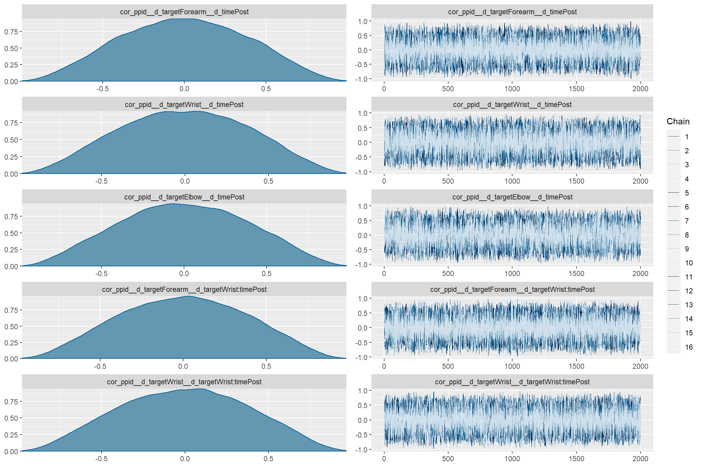
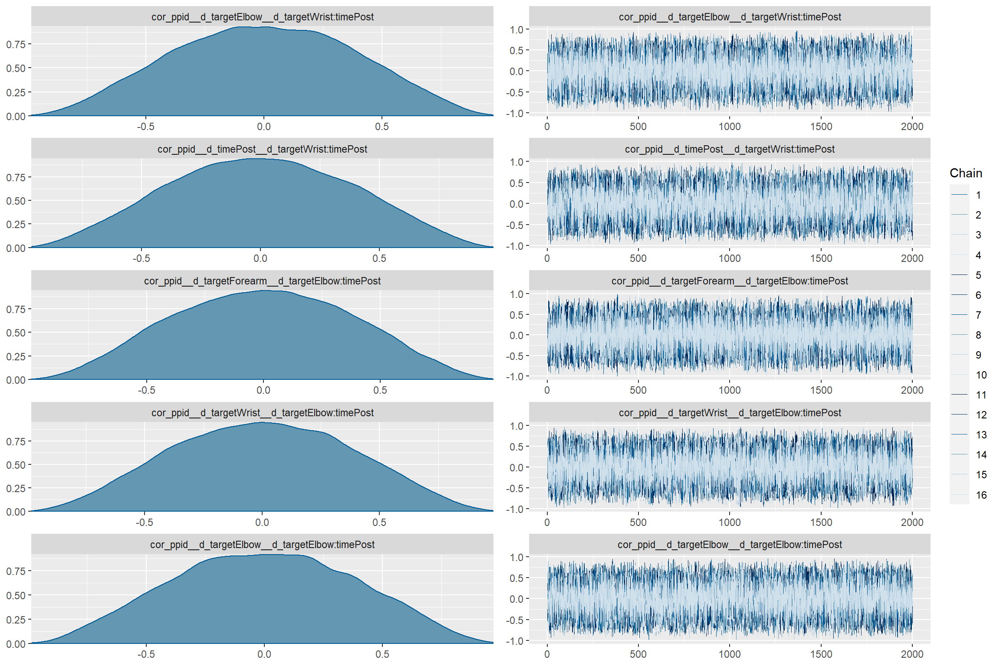
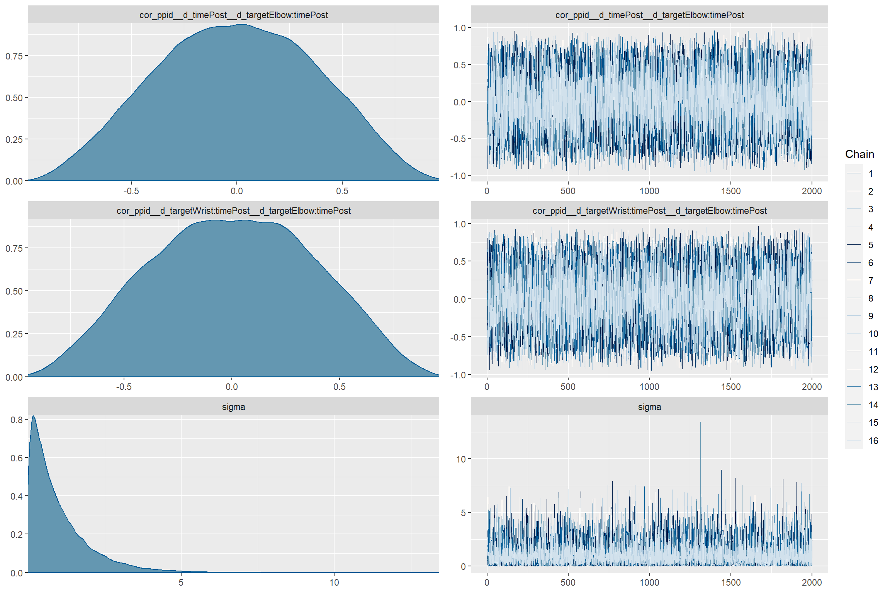
Posterior
landmark_lapsefix_error_time_target <- update(
landmark_lapsefix_error_time_target_priors,
sample_prior = "no",
refresh = 0,
seed = 1337,
file = here::here("scripts", "for_osf", "tooluse_in_VR", "models", "landmark_lapsefix_error_time_target.rds"),
file_refit = "on_change",
silent = TRUE
)Running MCMC with 16 parallel chains...
Chain 9 finished in 45.9 seconds.
Chain 15 finished in 47.4 seconds.
Chain 6 finished in 49.0 seconds.
Chain 10 finished in 51.0 seconds.
Chain 11 finished in 51.0 seconds.
Chain 13 finished in 52.2 seconds.
Chain 7 finished in 55.2 seconds.
Chain 16 finished in 55.1 seconds.
Chain 5 finished in 56.3 seconds.
Chain 1 finished in 57.3 seconds.
Chain 12 finished in 57.7 seconds.
Chain 4 finished in 63.6 seconds.
Chain 8 finished in 63.7 seconds.
Chain 14 finished in 64.4 seconds.
Chain 2 finished in 64.7 seconds.
Chain 3 finished in 66.0 seconds.
All 16 chains finished successfully.
Mean chain execution time: 56.3 seconds.
Total execution time: 66.2 seconds.summary(landmark_lapsefix_error_time_target) Family: gaussian
Links: mu = identity; sigma = identity
Formula: error_std ~ 0 + a + b * time + d
a ~ 0 + target
b ~ 0 + target
d ~ 0 + (0 + target + time + target:time | ppid)
Data: landmark_fix (Number of observations: 792)
Draws: 16 chains, each with iter = 3000; warmup = 1000; thin = 1;
total post-warmup draws = 32000
Group-Level Effects:
~ppid (Number of levels: 22)
Estimate Est.Error l-95% CI
sd(d_targetForearm) 0.59 0.10 0.43
sd(d_targetWrist) 0.82 0.14 0.60
sd(d_targetElbow) 0.59 0.11 0.41
sd(d_timePost) 0.39 0.10 0.20
sd(d_targetWrist:timePost) 0.29 0.17 0.02
sd(d_targetElbow:timePost) 0.39 0.16 0.06
cor(d_targetForearm,d_targetWrist) 0.64 0.14 0.33
cor(d_targetForearm,d_targetElbow) 0.67 0.14 0.33
cor(d_targetWrist,d_targetElbow) 0.26 0.20 -0.16
cor(d_targetForearm,d_timePost) -0.31 0.21 -0.67
cor(d_targetWrist,d_timePost) 0.10 0.23 -0.35
cor(d_targetElbow,d_timePost) -0.30 0.23 -0.70
cor(d_targetForearm,d_targetWrist:timePost) -0.04 0.31 -0.64
cor(d_targetWrist,d_targetWrist:timePost) -0.08 0.31 -0.64
cor(d_targetElbow,d_targetWrist:timePost) -0.18 0.31 -0.73
cor(d_timePost,d_targetWrist:timePost) 0.07 0.33 -0.56
cor(d_targetForearm,d_targetElbow:timePost) 0.29 0.26 -0.27
cor(d_targetWrist,d_targetElbow:timePost) 0.13 0.27 -0.41
cor(d_targetElbow,d_targetElbow:timePost) 0.24 0.28 -0.32
cor(d_timePost,d_targetElbow:timePost) -0.36 0.29 -0.80
cor(d_targetWrist:timePost,d_targetElbow:timePost) -0.29 0.33 -0.82
u-95% CI Rhat Bulk_ESS
sd(d_targetForearm) 0.81 1.00 11493
sd(d_targetWrist) 1.14 1.00 11013
sd(d_targetElbow) 0.83 1.00 14380
sd(d_timePost) 0.60 1.00 11255
sd(d_targetWrist:timePost) 0.64 1.00 5212
sd(d_targetElbow:timePost) 0.73 1.00 5500
cor(d_targetForearm,d_targetWrist) 0.85 1.00 11539
cor(d_targetForearm,d_targetElbow) 0.88 1.00 14134
cor(d_targetWrist,d_targetElbow) 0.61 1.00 18220
cor(d_targetForearm,d_timePost) 0.16 1.00 16314
cor(d_targetWrist,d_timePost) 0.54 1.00 20591
cor(d_targetElbow,d_timePost) 0.18 1.00 19679
cor(d_targetForearm,d_targetWrist:timePost) 0.54 1.00 25951
cor(d_targetWrist,d_targetWrist:timePost) 0.54 1.00 28694
cor(d_targetElbow,d_targetWrist:timePost) 0.48 1.00 21424
cor(d_timePost,d_targetWrist:timePost) 0.70 1.00 22660
cor(d_targetForearm,d_targetElbow:timePost) 0.73 1.00 23441
cor(d_targetWrist,d_targetElbow:timePost) 0.63 1.00 28699
cor(d_targetElbow,d_targetElbow:timePost) 0.75 1.00 20379
cor(d_timePost,d_targetElbow:timePost) 0.33 1.00 12185
cor(d_targetWrist:timePost,d_targetElbow:timePost) 0.44 1.00 11666
Tail_ESS
sd(d_targetForearm) 18340
sd(d_targetWrist) 16109
sd(d_targetElbow) 19163
sd(d_timePost) 14093
sd(d_targetWrist:timePost) 8354
sd(d_targetElbow:timePost) 5167
cor(d_targetForearm,d_targetWrist) 17294
cor(d_targetForearm,d_targetElbow) 20250
cor(d_targetWrist,d_targetElbow) 22174
cor(d_targetForearm,d_timePost) 20704
cor(d_targetWrist,d_timePost) 24294
cor(d_targetElbow,d_timePost) 22502
cor(d_targetForearm,d_targetWrist:timePost) 18065
cor(d_targetWrist,d_targetWrist:timePost) 22894
cor(d_targetElbow,d_targetWrist:timePost) 21569
cor(d_timePost,d_targetWrist:timePost) 23380
cor(d_targetForearm,d_targetElbow:timePost) 18301
cor(d_targetWrist,d_targetElbow:timePost) 22593
cor(d_targetElbow,d_targetElbow:timePost) 22474
cor(d_timePost,d_targetElbow:timePost) 17053
cor(d_targetWrist:timePost,d_targetElbow:timePost) 15781
Population-Level Effects:
Estimate Est.Error l-95% CI u-95% CI Rhat Bulk_ESS Tail_ESS
a_targetForearm 0.24 0.14 -0.04 0.52 1.00 6570 11930
a_targetWrist 0.25 0.19 -0.12 0.62 1.00 7708 12715
a_targetElbow -0.48 0.14 -0.76 -0.21 1.00 8884 14965
b_targetForearm -0.31 0.12 -0.54 -0.08 1.00 15679 19140
b_targetWrist 0.17 0.14 -0.10 0.45 1.00 16163 20051
b_targetElbow 0.10 0.12 -0.15 0.34 1.00 20432 21894
Family Specific Parameters:
Estimate Est.Error l-95% CI u-95% CI Rhat Bulk_ESS Tail_ESS
sigma 0.64 0.02 0.61 0.68 1.00 28221 23030
Draws were sampled using sample(hmc). For each parameter, Bulk_ESS
and Tail_ESS are effective sample size measures, and Rhat is the potential
scale reduction factor on split chains (at convergence, Rhat = 1).plot(landmark_lapsefix_error_time_target)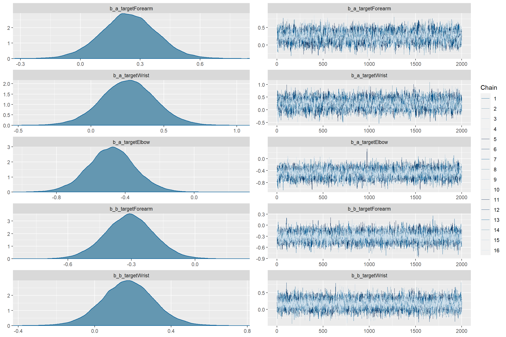
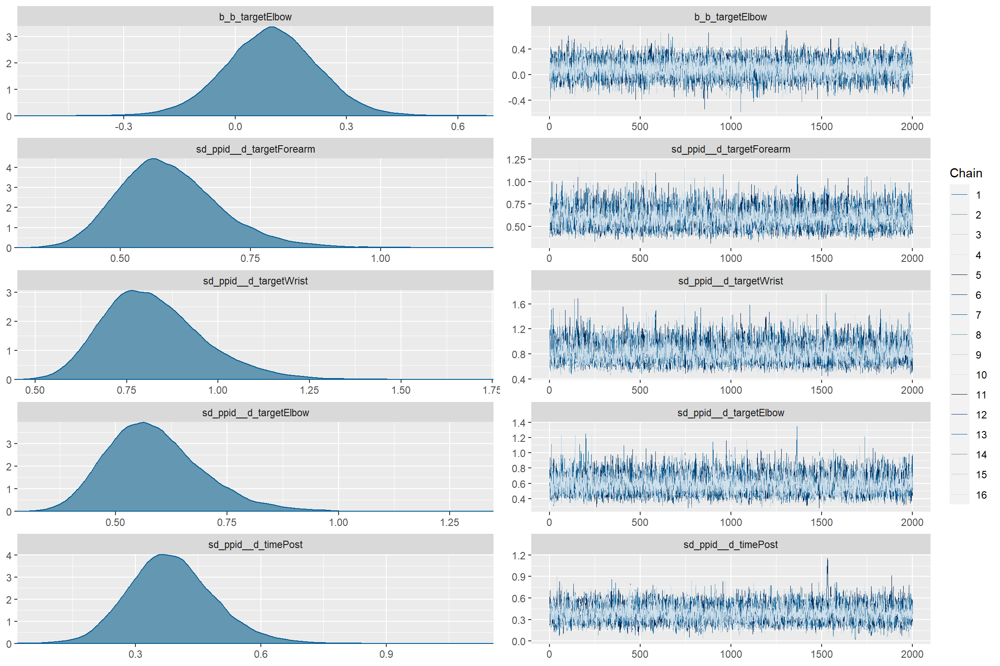
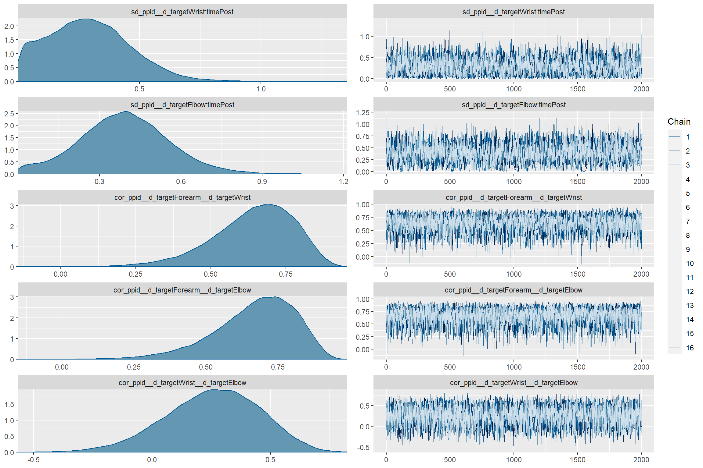
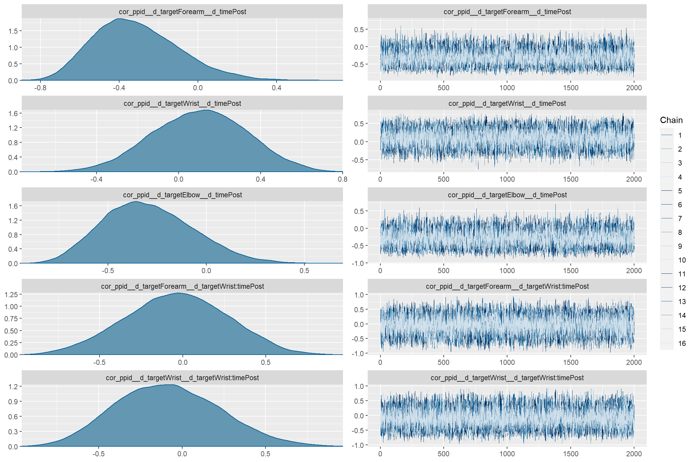
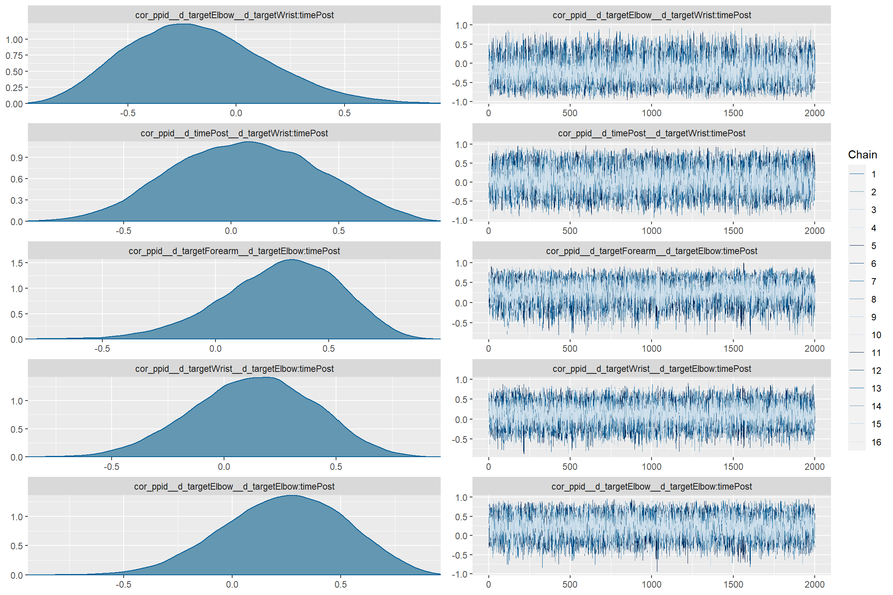
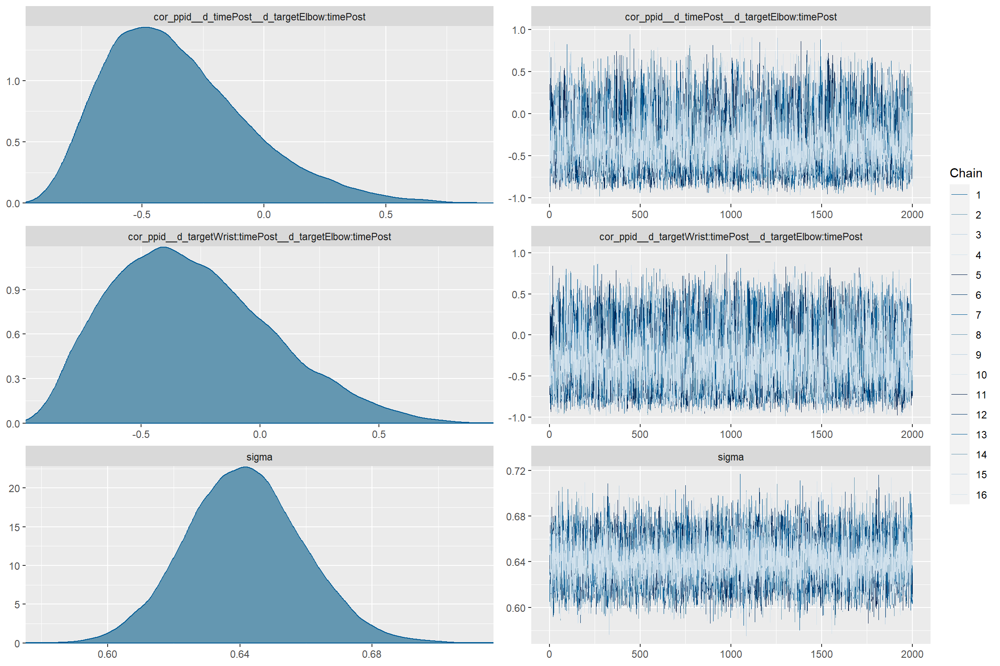
pp_check(
landmark_lapsefix_error_time_target,
type = "dens_overlay_grouped",
ndraws = 50,
group = "target"
) +
theme_tidybayes() +
theme(
axis.text.y = element_blank()
) +
labs(
title = "Landmark Task Errors",
subtitle = "Posterior Draws vs. Empirical Distribution",
x = "Error (standardized)"
)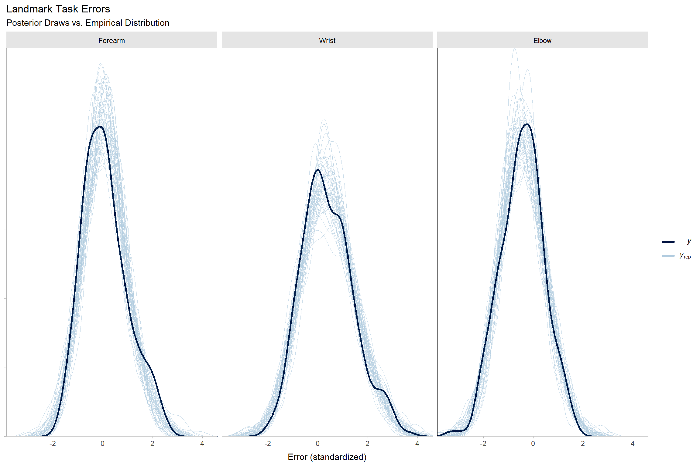
landmark_describe <- bayestestR::describe_posterior(
landmark_lapsefix_error_time_target,
centrality = "map",
ci_method="hdi"
) %>% as.data.table()
landmark_describe Parameter MAP CI CI_low CI_high pd ROPE_CI
1: b_a_targetForearm 0.21699439 0.95 -0.0343246 0.5209350 0.9572500 0.95
2: b_a_targetWrist 0.26509569 0.95 -0.1143240 0.6233090 0.9154062 0.95
3: b_a_targetElbow -0.47266751 0.95 -0.7627760 -0.2131380 0.9991250 0.95
4: b_b_targetForearm -0.30860263 0.95 -0.5441620 -0.0843318 0.9943750 0.95
5: b_b_targetWrist 0.17476854 0.95 -0.1032330 0.4420300 0.8994062 0.95
6: b_b_targetElbow 0.09807743 0.95 -0.1377360 0.3522060 0.7912813 0.95
ROPE_low ROPE_high ROPE_Percentage Rhat ESS
1: -0.1 0.1 0.13292763 1.002336 6537.360
2: -0.1 0.1 0.17947368 1.001608 7677.990
3: -0.1 0.1 0.00000000 1.001901 8810.609
4: -0.1 0.1 0.01253289 1.000019 15489.863
5: -0.1 0.1 0.28046053 1.000236 16063.670
6: -0.1 0.1 0.47608553 1.000352 20217.783landmark_bfs <- landmark_lapsefix_error_time_target %>%
bayesfactor_pointnull(
direction = ">",
prior = landmark_lapsefix_error_time_target_priors
) %>%
as.data.table()
(landmark_lapsefix_error_table <- merge(
landmark_bfs[Parameter %in% c(
"b_b_targetElbow",
"b_b_targetWrist",
"b_b_targetForearm"),
.(Parameter = fcase(
Parameter == "b_b_targetElbow", "Elbow",
Parameter == "b_b_targetWrist", "Wrist",
Parameter == "b_b_targetForearm", "Forearm"),
BF = exp(log_BF))],
landmark_describe[
Parameter %in% c(
"b_b_targetElbow",
"b_b_targetWrist",
"b_b_targetForearm"
)][,
Parameter := fcase(
Parameter == "b_b_targetElbow", "Elbow",
Parameter == "b_b_targetWrist", "Wrist",
Parameter == "b_b_targetForearm", "Forearm"
)
],
by = "Parameter"
)
) Parameter BF MAP CI CI_low CI_high pd ROPE_CI
1: Elbow 0.13619628 0.09807743 0.95 -0.137736 0.3522060 0.7912813 0.95
2: Forearm 0.02042891 -0.30860263 0.95 -0.544162 -0.0843318 0.9943750 0.95
3: Wrist 0.27982369 0.17476854 0.95 -0.103233 0.4420300 0.8994062 0.95
ROPE_low ROPE_high ROPE_Percentage Rhat ESS
1: -0.1 0.1 0.47608553 1.000352 20217.78
2: -0.1 0.1 0.01253289 1.000019 15489.86
3: -0.1 0.1 0.28046053 1.000236 16063.67landmark_lapsefix_error_table %>%
write_csv(file = here::here("scripts", "for_osf", "tooluse_in_VR", "tables", "landmark_table_lapsefix.csv"))model_params <- landmark_error_table %>% dplyr::select(
Parameter,
BF,
MAP,
CI_low,
CI_high
) %>% rename("Lower" = CI_low,
"Upper" = CI_high,
"Mode" = MAP)
fwrite(model_params, here::here("scripts", "for_osf", "tooluse_in_vr", "tables", "landmark_model_params.csv"))
saveRDS(model_params, here::here("scripts", "for_osf", "tooluse_in_vr", "tables", "landmark_model_params.rds"))